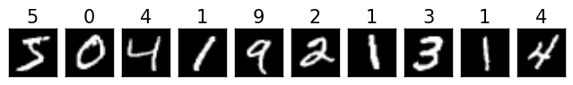
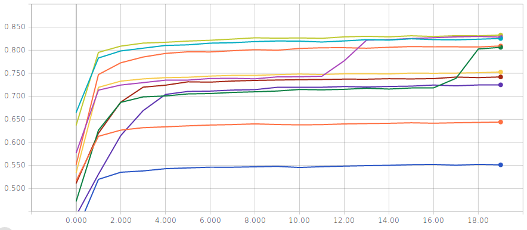
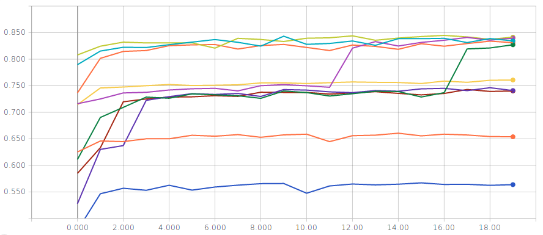
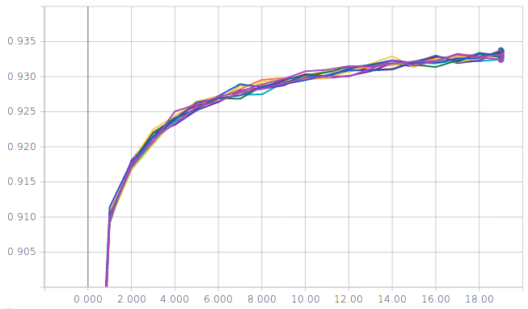
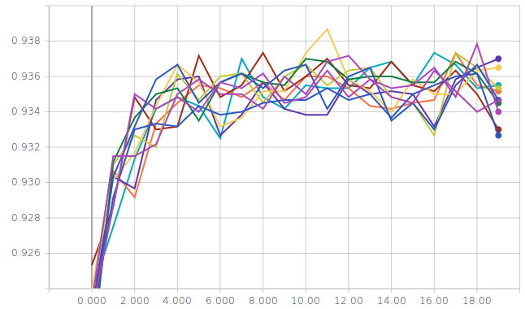
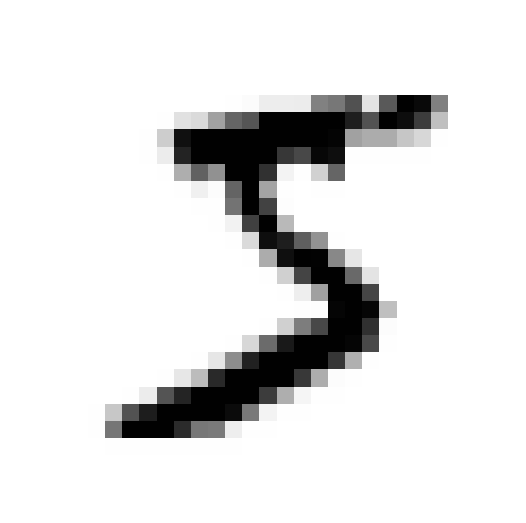
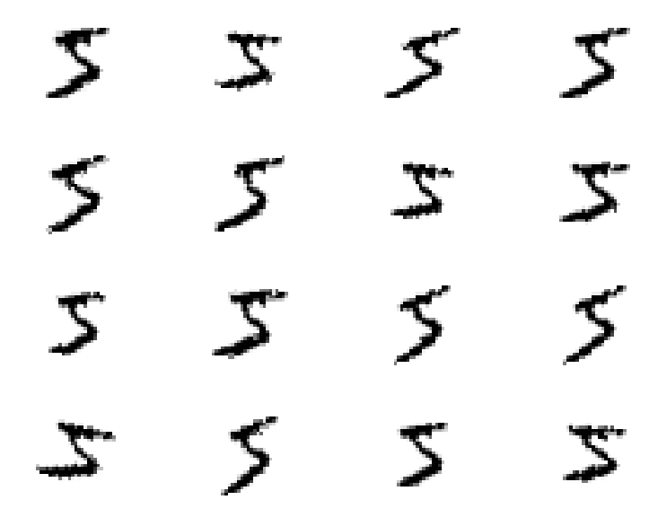

from tensorflow.keras.datasets import mnist
from tensorflow.keras.utils import to_categorical
(X_train, y_train), (X_test, y_test) = mnist.load_data()First steps in Keras: classifying handwritten digits(MNIST)
Keywords
Keras tutorial, MNIST
Deep learning lectures © 2018 by Jeremy Fix is licensed under CC BY-NC-SA 4.0


Objectives
In this practical, we will make our first steps with Keras and train our first models for classifying the handwritten digits of the MNIST dataset. It should be noted that this dataset is no more considered as a challenging problem but for an introduction with Keras and the first trained architectures, it does the job.
We will use Keras which was once a layer above multiple deep learning frameworks (theano, tensorflow, CNTK) but which has then be embedded within tensorflow since its 2.0 release. Keras is designed to be a general purpose easy to use framework. If you want to play with standard models, it is really quick and easy to do it with Keras but if you target implementing custom architectures, you should consider lower level frameworks such as tensorflow or pytorch.
The models you will train are :
- a linear classifier
- a fully connected neural network with two hidden layers
- a vanilla convolutional neural network (i.e. a LeNet like convnet)
- some fancier architectures (e.g. ConvNets without fully connected layers)
The point here is to introduce the various syntactic elements of Keras to:
- load the datasets,
- define the architecture, loss, optimizer,
- save/load a model and evaluate its performances
- monitor the training progress by interfacing with tensorboard
Important
VERY VERY Important: Below, we see together step by step how to set up our training script. While reading the following lines you will progressively fill in python script. We also see the modules to be imported only when these are required for the presentation. But obviously, it is clearer to put these imports at the beginning of your scripts. So the following python codes should not be strictly copy-pasted on the fly.
Having a running python interpreter with the required modules
For making the labs, I propose the following way to work :
- for the CentraleSupelec students, you can edit your code on the labs machines, and run it directly on the GPUs. Your home directory is a network home so that any modifications you do locally are seen from the GPUs,
- for SM20 lifelong trainees, you can edit and run your code within the jupyter lab
- for masters students (AVR, PSA), you can edit and run your code within the jupyter lab or, for experienced users, edit your code with VIM within a ssh session, a within the VNC client
To connect to the GPUs, use one of the procedures described in Using the CentraleSupelec GPUs.
You should now have at your disposal a python interpreter with the installed package, i.e. the following should work successfully :
sh11:~:mylogin$ python3 -c "from tensorflow import keras" If the above fails, stop here and ask me, I’ll be glad to help you.
A Linear classifier
Before training deep neural networks, it is good to get an idea of the performances of a simple linear classifier. So we will define and train a linear classifier and see together how this is written in Python/Keras.
While reading the following lines, edit a file named train_mnist_linear.py that you will fill.
Loading and basic preprocessing the dataset
The first step is to load the dataset as numpy arrays. Functions are already provided by Keras to import some datasets. The MNIST dataset is made of gray scale images, of size 28 , with values in the range [0; 255]. The training set consists in 60000 images and the test set consists in 10000 images. Every image represents an handwritten digit in [0, 9]. Below, we show the 10 first samples of the training set.

To import the MNIST dataset in Keras, you can do the following:
X_train and y_train are numpy arrays of respective shape (60000, 28, 28) and (60000,). X_test and y_test are numpy arrays of respective shape (10000, 28, 28) and (10000, ). X_train and X_test contain the images and y_train and y_test contain the labels. For a linear classifier (or in fact Dense Layers as well as we shall see in a moment and this is different from convolutional layers we will see later on) expect to get vectors in their input and not images, i.e. 1-dimensional and not 2-dimensional objects. So we need to reshape the loaded numpy arrays
num_train = X_train.shape[0]
num_test = X_test.shape[0]
img_height = X_train.shape[1]
img_width = X_train.shape[2]
X_train = X_train.reshape((num_train, img_width * img_height))
X_test = X_test.reshape((num_test, img_width * img_height))Now, the shape of X_train and X_test are (60000, 784) and (10000, 784) respectively.
The networks we are going to train output, for each input image, a probability distribution over the labels. We therefore need to convert the labels into their one-hot encoding. Keras provides the to_categorical function to do that.
y_train = to_categorical(y_train, num_classes=10)
y_test = to_categorical(y_test, num_classes=10)Now, the shape of y_train and y_test is (60000, 10) and (10000, 10) respectively and the first 10 entries of y_train are:
[ 0. 0. 0. 0. 0. 1. 0. 0. 0. 0.]
[ 1. 0. 0. 0. 0. 0. 0. 0. 0. 0.]
[ 0. 0. 0. 0. 1. 0. 0. 0. 0. 0.]
[ 0. 1. 0. 0. 0. 0. 0. 0. 0. 0.]
[ 0. 0. 0. 0. 0. 0. 0. 0. 0. 1.]
[ 0. 0. 1. 0. 0. 0. 0. 0. 0. 0.]
[ 0. 1. 0. 0. 0. 0. 0. 0. 0. 0.]
[ 0. 0. 0. 1. 0. 0. 0. 0. 0. 0.]
[ 0. 1. 0. 0. 0. 0. 0. 0. 0. 0.]
[ 0. 0. 0. 0. 1. 0. 0. 0. 0. 0.]Does these values make sense to you ? What is the label of the fourth sample ? Can you plot the corresponding input to check that the label is correct ?
For now, this is all we do for loading the dataset. Preprocessing the input actually influences the performances of the training but we come back to this later when normalizing the input.
Building the network
We consider a linear classifier, i.e. we perform logistic regression. As a reminder, in logistic regression, given an input image \(x_i \in \mathbb{R}^{28\times 28}\), we compute scores for each class as \(w_k^T x_i\) (in this notation, the input is supposed to be extended with a constant dimension equal to 1 to take into account the bias), that we pass through the softmax transfer function to get probabilities over the classes :
\[P(y=k / x_i) = \frac{e^{w_k^T x_i}}{\sum_{j=0}^{9} e^{w_j^T x_i}}\]
To define this model with Keras, we need an Input layer, a Dense layer and an Activation layer
Note
In keras, a model can be specified with the Sequential or Functional API. We here make use of the functional API which is more flexible than the Sequential API. Also, while one could incorporate the activation within the dense layers, we will be using linear dense layers so that we can visualize what is going on after each operation.
In Python, this can be written as :
from tensorflow.keras import Input
from tensorflow.keras.layers import Dense, Activation
from tensorflow.keras.models import Model
num_classes = 10
xi = Input(shape=(img_height*img_width,))
xo = Dense(num_classes)(xi)
yo = Activation('softmax')(xo)
model = Model(inputs=[xi], outputs=[yo])
model.summary()In the input layer, we just specify the dimension of a single sample, here 784 pixels per image. The dense layer has num_classes=10 units. The output of the dense layer feeds the softmax transfer function. By default, in Keras, a dense layer is linear and has the bias so that we do not need to extend the input to include the constant dimension. Therefore the outputs of yo are all in the range [0, 1] and sum up to 1. Finally, we define our model specifying the input and output layers. The call to model.summary() will display a summary of the architecture in the terminal.
Compiling and training
The next step is, in the terminology of Keras, to compile the model by providing the loss function to be minimized, the optimizer and the metrics to monitor. For this classification problem, an appropriate loss is the crossentropy loss. In Keras, among all the Losses, we will use the categorical_crossentropy loss. For the optimizer, several Optimizers are available and we will use adam. For the metrics, you can use some predefined metrics or define your own. Here, we will use the accuracy which makes sense because the dataset is balanced.
In Python, this can be written as
model.compile(loss='categorical_crossentropy',
optimizer='adam',
metrics=['accuracy'])Note
Metrics, losses and optimizers can be specified in two ways in the call of the compile function. It can be either specified by a string or by passing a function for the loss, a list of functions for the metrics and an Optimizer object for the optimizer.
We are now ready for training our linear classifier, by calling the fit function.
model.fit(X_train, y_train,
batch_size=128,
epochs=20,
verbose=1,
validation_split=0.1)
score = model.evaluate(X_test, y_test, verbose=0)
print('Test loss:', score[0])
print('Test accuracy:', score[1])We here used \(10 \%\) of the training set for validation purpose. This is based on the validation loss that we should select our best model (why should we do it on the validation loss rather than the validation accuracy?). At the end, we evaluate the performances on the test set.
You are now ready for executing your first training. You need first to log on a GPU node as described in section Using the GPU cluster of CentraleSupelec.
# First you log to the cluster
---
# And then :
python3 train_mnist_linear.pyThis is your first trained classifier with Keras. Depending on how lucky you are, you may reach a Test accuracy of something between \(50\%\) and \(85\%\) . If you repeat the experiment, you should end up with various accuracy; The training does not appear to be very consistent.
Callbacks for saving the best model and monitoring the training
So far, we just get some information within the terminal but Keras allows you to define Callbacks. We will define two callbacks :
- a TensorBoard callback which allows to monitor the training progress with tensorboard
- a ModelCheckpoint callback which saves the best model with respect to a provided metric
For both these callbacks, we need to specify a path to which data will be logged. I propose you the following utility function which generates a unique path:
import os
---
def generate_unique_logpath(logdir, raw_run_name):
i = 0
while(True):
run_name = raw_run_name + "-" + str(i)
log_path = os.path.join(logdir, run_name)
if not os.path.isdir(log_path):
return log_path
i = i + 1Note that this function will create a unique directory for storing all the things to need to store for one experiment. We will store there the history of the metrics during training, the best model we found, etc…
For defining a TensorBoard callback, you need to add its import, instantiate it by specifying a directory in which the callback will log the progress and then modify the call to fit to specify the callback.
from tensorflow.keras.callbacks import TensorBoard
---
run_name = "linear"
logpath = generate_unique_logpath("./logs_linear", run_name)
tbcb = TensorBoard(log_dir=logpath)
---
model.fit(X_train, y_train,
batch_size=128,
epochs=20,
verbose=1,
validation_split=0.1,
callbacks=[tbcb])Once this is done, you have to start tensorboard on the GPU.
[In one terminal on the GPU]
sh11:~:mylogin$ tensorboard --logdir ./logs_linear
Starting TensorBoard b'47' at http://0.0.0.0:6006
(Press CTRL+C to quit)And then start a browser and log to http://localhost:6006 . Once this is done, you will be able to monitor your metrics in the browser while the training are running.
The second callback we define is a ModelCheckpoint callback which will save the best model based on a provided metric, e.g. the validation loss.
from tensorflow.keras.callbacks import ModelCheckpoint
---
run_name = "linear"
logpath = generate_unique_logpath("./logs_linear", run_name)
checkpoint_filepath = os.path.join(logpath, "best_model.h5")
checkpoint_cb = ModelCheckpoint(checkpoint_filepath, save_best_only=True)
model.fit(X_train, y_train,
batch_size=128,
epochs=20,
verbose=1,
validation_split=0.1,
callbacks=[tbcb, checkpoint_cb])You can now run several experiments, monitor them and get a copy of the best models. A handy bash command to run several experiments is given below :
for iter in $(seq 1 10); do \
echo ">>>> Run $iter" && python3 train_mnist_linear.py ; done;Logistic regression without normalization of the input
Two metrics are displayed for several runs; on the left the training accuracy and on the right the validation accuracy


You should reach a validation and test accuracy between \(55\%\) and \(85\%\). The curves above seem to suggest that there might be several local minima…but do not be misleaded, the optimization problem is convex so the results above are just indications that we are not solving our optimization problem the right way. Actually, with recent versions of Keras, it does not appear to be the case anymore.
Loading a model
In the previous paragraph, we regularly saved the best model (with the ModelCheckpoint callback) with respect to the validation loss. You may want to load this best model, for example for estimating its test set performance at the end of your training script.
At the time of writing this practical, there is an issue in the “h5” file saved by Keras and some of its elements must be removed in order to be able to reload the model :
import h5py
from tensorflow.keras.models import load_model
---
with h5py.File(checkpoint_filepath, 'a') as f:
if 'optimizer_weights' in f.keys():
del f['optimizer_weights']
model = load_model(checkpoint_filepath)
score = model.evaluate(X_test, y_test, verbose=0)
print('Test loss:', score[0])
print('Test accuracy:', score[1])Normalizing the input
So far, we used the raw data, i.e. images with pixels in the range [0, 255]. It is usually a good idea to normalize the input because it allows to make training faster (because the loss becomes more circular symmetric), allows to use a consistent learning rate for all the parameters in the architecture and finally allows to use the same regularization coefficient for every parameter.
There are various ways to normalize the data and various ways to translate it into Keras. The point of normalization is to equalize the relative importance of the dimensions of the input. One normalization is min-max scaling just scaling the input by a constant factor, e.g. given an image I, you feed the network with \(\frac{I}{255.} - 0.5\). Another normalization is standardization. Here, you compute the mean of the training vectors and their variance and normalize every input vector (even the test set) with these data. Given a set of training images \(X_i \in \mathbb{R}^{784}, i \in [0, N-1]\), and a vector \(X \in \mathbb{R}^{784}\) you feed the network with \(\hat{X} \in \mathbb{R}^{784}\) given by
\[ X_\mu = \frac{1}{N} \sum_{i=0}^{N-1} X_i \] \[ X_\sigma = \sqrt{\frac{1}{N} \sum_{i=0}^{N-1} (X_i - X_\mu)^T (X_i - X_\mu)} + 10^{-5} \]
\[ \hat{X} = (X - X_\mu)/X_\sigma \]
How do we introduce normalization in a Keras model ? One way is to create a dataset that is normalized and use this dataset for training and testing. Another possibility is to embed normalization in the network by introducing a Lambda layer right after the Input layer. For example, introducing standardization in our linear model could be done the following way :
from tensorflow.keras.layers import Lambda
---
xi = Input(shape=(img_height*img_width,), name="input")
mean = X_train.mean(axis=0)
std = X_train.std(axis=0) + 1.0
xl = Lambda(lambda image, mu, std: (image - mu) / std,
arguments={'mu': mean, 'std': std})(xi)
xo = Dense(num_classes, name="y")(xl)
yo = Activation('softmax', name="y_act")(xo)
model = Model(inputs=[xi], outputs=[yo])The advantage of embedding a standardizing layer is that it makes it easier to use the model on new unseen data. Indeed, the normalization coefficients are stored within the model and you do not have to save them separately.
Logistic regression with input standardization
Two metrics are displayed for several runs; on the left the training accuracy and on the right the validation accuracy


You should reach a validation accuracy of around \(93.6\%\) and a test accuracy of around \(92.4\%\).
A vanilla convolutional neural network
The multiLayer feedforward network does not take any benefit from the intrinsic structure of the input space, here images. We propose in this paragraph to explore the performances of Convolutional Neural Networks (CNN) which exploit that structure. Our first experiment with CNN will consider a vanilla CNN, i.e. a stack of conv-relu-maxpooling layers followed by some dense layers.
In order to write our script from training CNN, compared to the script for training a linear or multilayer fully connected model, we need to change the input_shape and also introduce new layers: Convolutional layers, Pooling layers and a Flatten layer.
The tensors for convolutional layers are 4D which include batch_size, image width, image height, number of channels. The ordering is framework dependent. In tensorflow, it is channels_last, in which case, the tensors are (batch_size, image height, image width, number of channels).
The first thing to do is to ensure the data arrays are in the appropriate format. Remember, before, we reshaped the training and test numpy arrays as (60000, 784) and (10000, 784) respectively. Now, with convolutional neural networks, the input data topology is exploited and we shall keep the data as images.
num_train = X_train.shape[0]
num_test = X_test.shape[0]
img_height = X_train.shape[1]
img_width = X_train.shape[2]
X_train = X_train.reshape((num_train, img_height, img_width))
X_test = X_test.reshape((num_test, img_height, img_width))Then, the input_shape variable, used for defining the shape of the Input layer, must also be adapted :
input_shape = (img_rows, img_cols, 1) The next step is to define our model. We here consider stacking Conv-Relu-MaxPool layers. One block with 64 5x5 stride 1 filters and 2x2 stride 2 max pooling would be defined with the following syntax :
from tensorflow.keras.layers import Conv2D
from tensorflow.keras.layers import MaxPooling2D
---
x = Conv2D(filters=64,
kernel_size=5, strides=1
padding='same')(x)
x = Activation('relu')(x)
x = MaxPooling2D(pool_size=2, strides=2)(x) The “padding=‘same’” parameter induces that the convolutional layers will not decrease the size of the representation. We let this as the job of the max-pooling operation. Indeed, the max pooling layer has a stride 2 which effectively downscale the representation by a size of 2.
How do you set up the architecture ? the size of the filters ? the number of blocks ? the stride ? the padding ? well, this is all the magic. Actually, we begin to see a small part of the large number of degrees of freedom on which we can play to define a convolutional neural network.
The last thing we need to speek about is the Flatten Layer. Usually (but this is not always the case), there are some final fully connected (dense) layers at the end of the architecture. When you go from the Conv/MaxPooling layers to the final fully connected layers, you need to flatten your feature maps. This means converting the 4D Tensors to 2D Tensors. For example, the code below illustrates the connection between some convolutional/max-pooling layers to the output layer with a 10-class classification:
x = Conv2D(filters=64,
kernel_size=5, strides=1
padding='same')(x)
x = Activation('relu')(x)
x = MaxPooling2D(pool_size=2, strides=2)(x)
x = Flatten()(x)
y = Dense(10, activation='softmax')(x)Now, we should have introduced all the required blocks. As a first try, I propose you to code a network with :
- The input layer
- The standardization Lambda layer
- 3 consecutive blocks with Conv(5x5, strides=1, padding=same)-Relu-MaxPooling(2x2, strides=2). Take 16 filters for the first Conv layer, 32 filters for the second and 64 for the third
- Two dense layers of size 128 and 64, with ReLu activations
- One dense layer with 10 units and a softmax activation
Training this architecture, you should end up with almost \(100\%\) training accuracy, \(99.2\%\) of validation accuracy and around \(98.9\%\) of test accuracy. Introducing Dropout (after the standardizing layer and before the dense layers), the test accuracy should raise up to around \(99.2\%\). This means that 80 images out of the 10000 in the test set are misclassified.
Small kernels, no fully connected layers, Dataset Augmentation, Model averaging
Architecture
Recently, it is suggested to use small convolutional kernels (typically \(3\times 3\), and sometimes \(5\times 5\)). The rationale is that using two stacked \(3\times 3\) convolutional layers gives you receptive field size of \(5\times 5\) with less parameters (and more non linearity). This is for example the guideline used in VGG : use mostly \(3\times 3\) kernels, stack two of them, followed by a maxpool and then double the number of filters. The number of filters is usually increased as we go deeper in the network (because we expect the low level layers to extract basic features that are combined in the deeper layers). Finally, in (Lin, Chen, & Yan, 2013), it is also suggested that we can completly remove the final fully connected layers and replace them by GlobalAveragePooling layers. It appears that removing fully connected layers, the network is less likely to overfit and you end up with much less parameters for a network of a given depth (this is the fully connected layers that usually contain most of your parameters). Therefore, I suggest you to give a try to the following architecture :
- InputLayer
- Standardizing lambda layer
- 16C3s1-BN-Relu-16C3s1-BN-Relu - MaxPool2s2
- 32C3s1-BN-Relu-32C3s1-BN-Relu - MaxPool2s2
- 64C3s1-BN-Relu-64C3s1-BN-Relu - GlobalAverage
- Dense(10), Softmax
where 16C3s1 denotes a convolutional layer with 16 kernels, of size \(3\times 3\), with stride 1, with zero padding to keep the same size for the input and output. BN is a BatchNormalization layer. MaxPool2s2 is a max-pooling layer with receptive field size \(2\times 2\) and stride 2. GlobalAverage is an averaging layer computing an average over a whole feature map.
This should bring you with a test accuracy around \(99.2\%\) with 72.890 trainable parameters.
Parametrizing your experiments
Before going further, I invite you to read the section on Parametrizing a script with argparse. This will show you a way to provide options to your script so that you can easily test different configurations.
Now, it is also a good practice to save the command that was executed for a given experiment. Remember, we created a directory for storing the metrics and the best model, what about also saving the command we executed to keep track of it ? For this, we can both save a summary file and dump its content on the tensorboard.
# Write down the summary of the experiment
summary_text = """
## Executed command
{command}
## Args
{args}
""".format(command=" ".join(sys.argv), args=args)
with open(os.path.join(logpath, "summary.txt"), 'w') as f:
f.write(summary_text)
writer = tf.summary.create_file_writer(os.path.join(logpath,'summary'))
with writer.as_default():
tf.summary.text("Summary", summary_text, 0)Dataset Augmentation and model averaging
One process which can bring you improvements is Dataset Augmentation. The basic idea is to apply transformations to your input images that must keep invariant your label. For example, slightly rotating, zooming or shearing an image of, say, a 5 is still an image of a 5 as shown below :


Now, the idea is to produce a stream (actually infinite if you allow continuous perturbations) of training samples generated from your finite set of training samples. With Keras, you can augment your image datasets using an ImageDataGenerator. Here is a snippet to create the generator that produced the images above :
from tensorflow.keras.preprocessing.image import ImageDataGenerator
datagen = ImageDataGenerator(shear_range=0.3,
zoom_range=0.1,
rotation_range=10.)As a note, for some of the transformations ImageDataGenerator performs, it is necessary to invoke the fit method (e.g. featurewise_std_normalization).
Now, in order to make use of the generator, we need to slightly adjust our split into training/validation sets, as well as our optimization of the model which we did so far calling the model.fit method.
def split(X, y, test_size):
idx = np.arange(X.shape[0])
np.random.shuffle(idx)
nb_test = int(test_size * X.shape[0])
return X[nb_test:,:, :, :], y[nb_test:],\
X[:nb_test, :, :, :], y[:nb_test]
X_train = X_train.reshape(num_train, img_rows, img_cols, 1)
X_train, y_train, X_val, y_val = split(X_train, y_train,
test_size=0.1)
y_train = to_categorical(y_train, num_classes)
y_val = to_categorical(y_val, num_classes)
datagen = ImageDataGenerator(....)
train_flow = datagen.flow(X_train, y_train, batch_size=128)
model.fit(train_flow,
steps_per_epoch=X_train.shape[0]/128,
validation_data=(X_val, y_val),
.....)Fitting the same architecture as before but with dataset augmentation, you should reach an accuracy around \(99.5\%\).
Now, as a final step in our beginner tutorial on keras, you can train several models and average their probability predictions over the test set. An average of 4 models might eventually lead you to a loss of 0.0105 and an accuracy of \(99.68\%\).
A possible solution
You will find a possible solution, with a little bit more than what we have seen in this practical in the LabsSolutions/00-keras-MNIST directory. It is structured in three scripts, one for data loading (data.py), one for defining the models (models.py) and one for orchestrating everything (main.py). The script is also ran on FashionMNIST rather than MNIST.
References
Lin, M., Chen, Q., & Yan, S. (2013). Network in network. arXiv. Retrieved from https://arxiv.org/abs/1312.4400
Srivastava, N., Hinton, G. E., Krizhevsky, A., Sutskever, I., & Salakhutdinov, R. (2014). Dropout: A simple way to prevent neural networks from overfitting. Journal of Machine Learning Research, 15(1), 1929–1958. Retrieved from http://dl.acm.org/citation.cfm?id=2670313